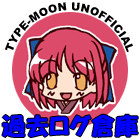

|
 ■ UNOFFICIAL TYPE-MOON BBS 過去ログ倉庫 ■ TYPE-MOON OFFICIAL HOME PAGE内で運営されていたBBSの過去ログ倉庫です。 fuzzy様のUNOFFICIAL
BBSとの連動企画で、有志の手によって運営されています。
■ このサイトについて ■ 2002年9月22日にTYPE-MOON
OFFICIAL
HOME PAGE内の掲示板の仕様が変更になり、ファン同士の活発な議論・情報交換ができなくなるため継承的な場所として設置したものです。
また、「非公式」を謳ってはいますが、これは「運営に『TYPE-MOON』様や『竹箒』様が関わっていない」ということであり、「無許可・無許諾」を意味するものではありません。全て、許可・許諾の範囲内で運営されております。 ■ 過去ログについて ■ この倉庫に保存されている過去ログは、「過去のものをそのままの形で保管する」という考え方から、submit系ボタンの無効化(書き込みや検索は行えません)や、BBS内リンクの張り直しなど、過去ログとして運用するにあたって必要最低限の修正を加えてはありますが、基本的には公開時のままです。
掲示板への書き込みで使用されている顔アイコンについては、残念ながら過去ログでの使用許可が下りなかったため、WEB素材についてのガイドラインに沿って、新規に作成したアイコンを代替に使用しています。
■ リンク ■
リンクはご自由にどうぞ。 リンク先URL: http://www.zob.ne.jp/~goripon/tmbbslog/ (C)2002 UNOFFICIAL TYPE-MOON BBS過去ログ倉庫 / 管理人: ごりぽん |
||||||||||||||||||||||||||||||||||||